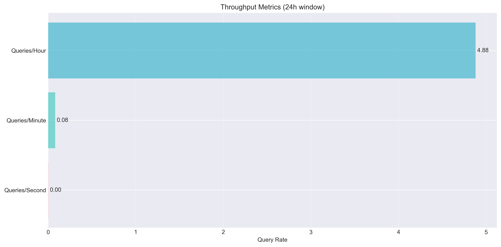
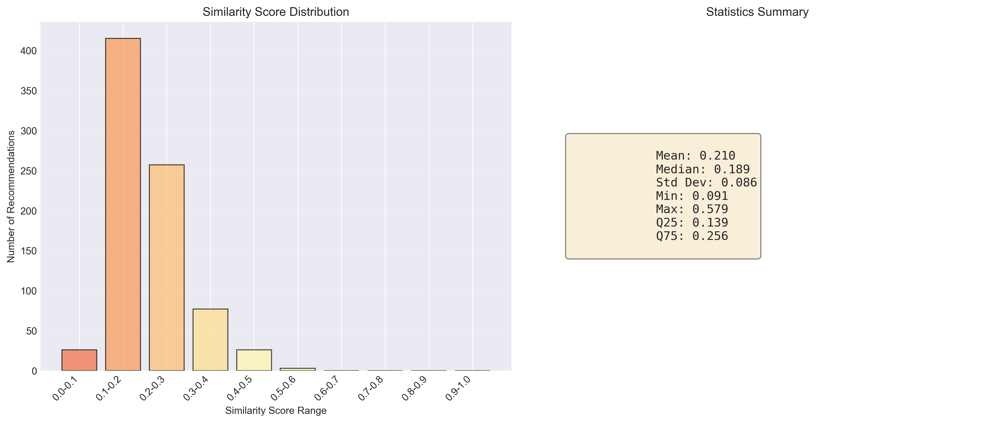
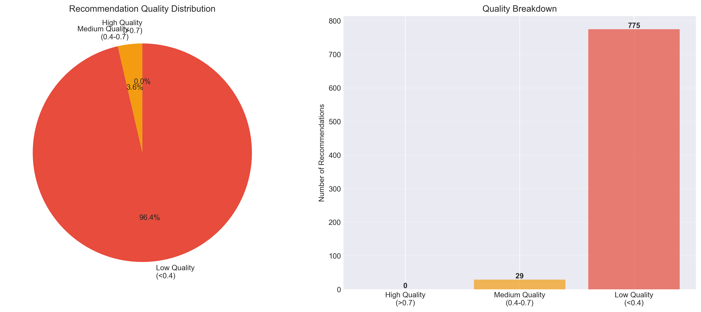
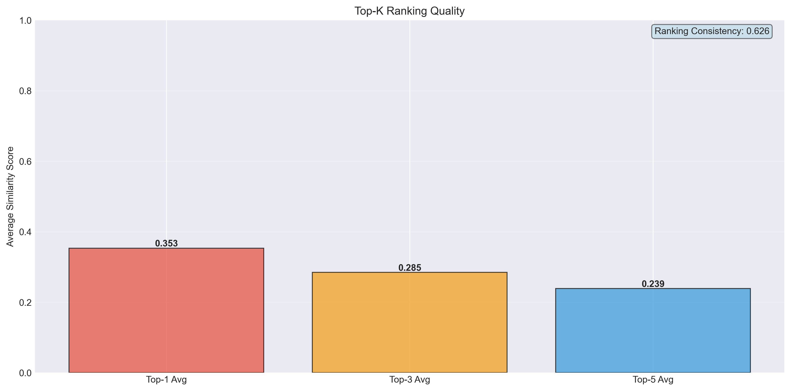

📊 Journal Recommendation System
Comprehensive Metrics Dashboard
Generated: 2025-11-08 22:18:18
System Status
HEALTHY
Health Score
100.0%
Total Journals
1,776
Vector Coverage
100.0%
Queries (24h)
117
Avg Response Time
0.0ms
⚡ Performance Metrics
Response Time Statistics
Visualization not available
Response Time Distribution
Visualization not available
System Throughput
Component Execution Breakdown
Visualization not available
🎯 Accuracy Metrics
Similarity Score Distribution
Recommendation Quality Breakdown
Ranking Quality Metrics
Recommendation Diversity